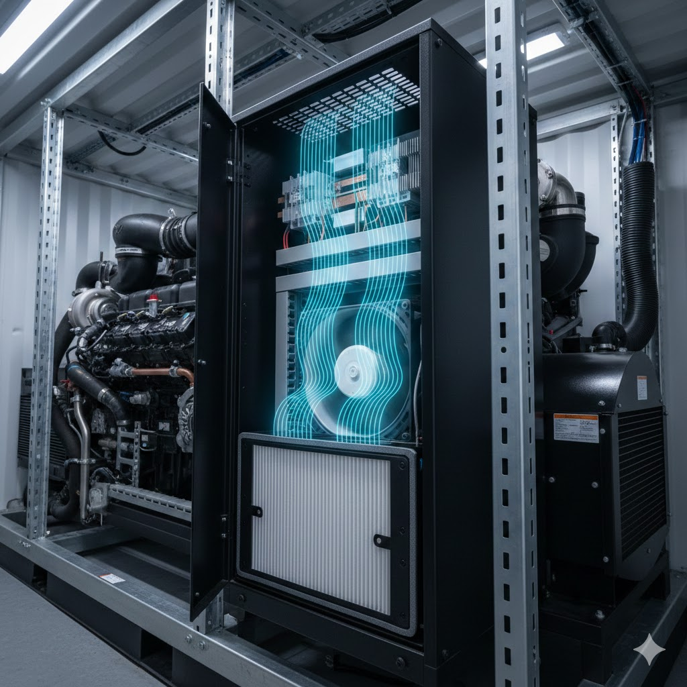

Hyliion • Generator Platform • Forced Convection • Fan & Filter Selection • Plenum Design • Verification Planning
Developed a forced-convection thermal management architecture for a low-voltage (LV) control cabinet on a generator platform. The work focused on maintaining electronics reliability under worst-case ambient conditions while meeting environmental ingress, filtration-driven pressure-drop, packaging, and serviceability constraints. Detailed internal layout, component list, and absolute temperature/flow targets are omitted due to confidentiality.

Sized required airflow using a steady-state energy balance on cabinet air (heat load + allowable bulk temperature rise). Included fan electrical power as part of the effective thermal load where applicable, and documented modeling assumptions (steady state, constant properties, negligible KE/PE).
Estimated cabinet pressure drop by combining filtration losses, internal restrictions, and exit losses to form a system curve. Fan selection was performed at the coupled operating point (fan curve ∩ system curve), with conservative allowances for filter loading. CFD remains an optional refinement to further de-risk airflow distribution and hotspot behavior prior to full hardware build.